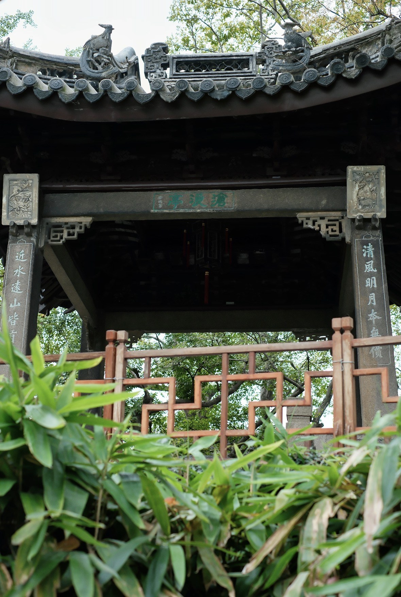

交 互 动 效 · MOTION SPECIFICATION v1.0
动 效 语 言
动效不是装饰，是园林空间逻辑的转译：游线的开合对应元素的进退，水的流动对应界面的位移，印章的落定对应操作的确认。 全部动效遵循"动效有因、节奏有度、可被关闭"三条底线。
01
动 效 总 则
FOUR PRINCIPLES
一 · 动 效 有 因
每一次动效都要回答"它解释了什么"。展开说明层次、位移表示层级、粒子表示状态改变。
二 · 节 奏 有 度
同类动效时长一致，不同层级用快慢区分；超过 800ms 的过场必须可被跳过。
三 · 噪 音 隔 离
同一屏内自动播放的动效不超过一处；持续动效仅限品牌元素且可被遮挡降频。
四 · 可 被 关 闭
尊重系统"减少动效"设置，个人中心亦提供手动开关；关闭后仅保留功能性反馈。
02
缓 动 与 时 长
EASING & DURATION
墨 晕
Ink · ease-out
cubic-bezier(.22,.61,.36,1)
墨迹晕开：文字淡入、图片浮出
墨迹晕开：文字淡入、图片浮出
移 步
Move · expo-out
cubic-bezier(.16,1,.3,1)
移步换景：页面转场、卡片浮起
移步换景：页面转场、卡片浮起
落 印
Seal · back-out
cubic-bezier(.34,1.56,.64,1)
印章落款：按钮按下、成功反馈
印章落款：按钮按下、成功反馈
水 波
Ripple · linear
linear
涟漪扩散、进度推进、加载循环
涟漪扩散、进度推进、加载循环
时 长 标 尺
按时长分级，保证同类反馈节奏一致
| 等 级 | 时 长 | 缓 动 | 适 用 场 景 |
|---|---|---|---|
| 即时反馈 | 120–200ms | ease-out | 按钮按下、图标变色、开关滑动、选项高亮 |
| 元素进出 | 280–420ms | ease-ink / expo-out | Toast 出现、标签页切换、卡片浮起、卡片展开 |
| 结构展开 | 560–640ms | expo-out | 折叠面板、模态出现、抽屉推入、视差位移 |
| 页面转场 | 700–900ms | expo-out + 遮罩 | 页面进入退出、共享元素过渡、路由切换 |
| 循环动效 | 1.4–5s | linear / ease-in-out | 骨架屏微光、涟漪、呼吸提示、加载旋转 |
03
页 面 内 动 效
IN-PAGE MOTION
可 交 互 示 例
以下组件均为真实原型中的实现，可直接操作体验

悬 停 浮 起
上移 6px + 阴影加深 + 图片缓推
悬 停 / 焦 点
280ms · expo-out
点 赞 粒 子
朱砂散开 620ms
收 藏 / 分 享
图标变形 + 提示条
园
印
印
印 章 落 款
旋转落下 · 620ms
呼 吸 / 涟 漪
3 环错相 2.4s
进 度 条
朱砂→赭金渐变
滚 动 触 发 与 视 差
滚动进入视口触发淡入上移，子元素按 80ms 步进错峰；Hero 图片层做 0.12 倍速视差
错 峰 入 场
80ms 步 进
共 同 归 位
滚动进入视口时按顺序淡入上移（gpRise 660ms）
不同图层以不同速率位移，模拟"隔窗观景"的纵深
04
转 场 动 效
TRANSITIONS
共 享 元 素 过 渡（列表 → 详情）
从列表卡片点击进入详情页时，封面图与园名沿同一路径连续过渡，避免"跳切"
留 园 · 卡 片
拙 政 园
网 师 园
留 园 · 详 情 首 屏
点击右侧按钮体验共享元素过渡
760ms · expo-out · 图 缩 放 1.0 → 1.34，文案淡出后回填
转 场 矩 阵
四类转场的具体做法
| 转 场 类 型 | 触 发 | 画 面 处 理 | 时 长 |
|---|---|---|---|
| 页面进入 | 路由加载完成 | 整页淡入 + 18px 上移，标题按字符错峰 150ms 展开 | 500ms |
| 页面退出 | 点击站外链接 | 墨色遮罩自下而上漫过 → 跳转（可跳过） | 620ms |
| 共享元素 | 列表 → 详情 | 封面图与标题位置连续插值，卡片其余部分淡出 | 760ms |
| 导航切换 | 顶部导航 | 下划线滑动 + 内容区整段替换淡入；抽屉式滑入 | 420ms |
05
情 感 化 微 交 互
MICRO-INTERACTIONS & BRAND
互 动 反 馈 对 应 表
每个情感动作都有对应的品牌化反馈
| 动 作 | 视 觉 反 馈 | 文 案 | 情 感 传 达 |
|---|---|---|---|
| 点赞 | 心形弹跳 1.42 倍 + 7 粒朱砂散开 | 已题赞 · 留名卷末 | 被认可的参与感 |
| 收藏 | 书签笺片上浮 + 描边转朱砂 | 已收入我的笺囊 | 珍藏与占有 |
| 分享 | 图标上移 + Toast 升起 | 游园笺已复制，可分享同行 | 邀约同行 |
| 评论 | 新题咏插入列表顶部 + 轻微缩放 | 题咏已上卷首 | 署名的归属感 |
| 成功 | 印章落下（旋转 16° 回正） | 已收入笺囊 | 盖印确认 |
| 失败 | 墨点晕开 + 抖动一次 | 园门暂闭 | 不失礼的歉意 |
| 空状态 | 空卷轴呼吸微动 | 笺囊尚空 | 温柔的邀请 |
品 牌 形 象 · 「 园 印 」
以朱砂印章为原型的吉祥物，出现在加载、成功与空状态中，承担趣味互动
「园印」是园志的拟人化化身：一枚会呼吸的朱砂印章。它在启动页落款、在加载时蘸墨、在空状态里空着等待被盖下，在成功反馈时盖出一个漂亮的章。用户在设置页可开启"趣味互动"，关闭后仅保留静态标识。
06
核 心 任 务 流 程 动 效
USER JOURNEY
开 启 → 寻 园 → 阅 读 → 收 藏 → 分 享
一条动效串联六个页面，每一步都以"墨"为共同语言
01
启 动 页
墨滴入砚 → 进度推进 → 印章落款
2.4s02
首 页
字符逐个落纸 → 鼠标涟漪扩散
1.2s / 常驻03
搜 索 页
旧内容保留 + 顶部细进度推进 → 结果墨染淡入
620ms04
详 情 页
共享元素过渡 → 封面擦除展开 → 目录联动
760ms05
收 藏
笺片上浮 + 朱砂描边 + Toast 升起
280ms06
分 享
图标上移 + 游园笺复制成功提示
280ms贯穿动线的隐喻是"墨"与"印章"：未确定的区域是淡墨（半透明待补全），确认的动作用朱砂落印封存（不可逆的提交），而导航切换如同翻页（共享元素连续运动）。三段语义一致，用户在任意页面都能预判下一步的反馈形态。
07
可 访 问 性
ACCESSIBILITY
| 场 景 | 做 法 |
|---|---|
| 减少动效偏好 | 通过 @media (prefers-reduced-motion: reduce) 将全局动画时长压至 0.01ms，关闭视差与自动播放，仅保留状态色变化 |
| 手动开关 | 「我的 → 偏好设置 → 减少动效」可独立覆盖，默认跟随系统设置 |
| 焦点可见 | 所有可交互元素保留 :focus-visible 朱砂描边，键盘用户可完整操作 |
| 动效超时 | 页面级过场超过 800ms 时，出现"跳过"入口；启动页进度不锁定用户，可随时点击进入 |
| 对比度 | 正文对比度 ≥ 7:1，辅助文字 ≥ 4.5:1；状态不单靠颜色表达，同时附加图标或文案 |
| 节奏控制 | 同一屏内自动播放动效不超过一处；持续动效仅保留品牌元素且支持被用户操作打断 |